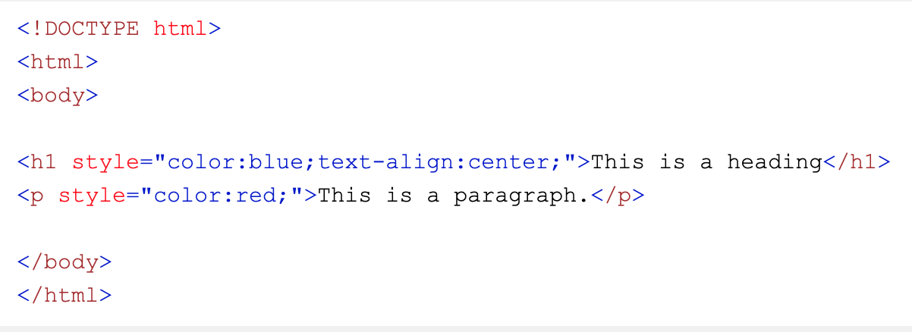

CSS står for Cascading Style Sheets.
CSS bruges til at style et HTML dokument.
Ved at have et style sheet adskiles struktur og udseende fra hinanden, hvilket gør det mere overskueligt og nemmere at få overblik.
Grid blev introduceret i 2017. Med hjælp af grid er det nemmere at designe hjemmesider i et gitter. Består af et layoutsystem med rækker og kolonner, det gør det nemmere at designe uden at bruge "floats" og "positioning".
Cascading er et sæt regler der definerer hvordan modstridende CSS-deklareringer løses. Reglerne bestemer hvilke deklarationer er fremtider og hvilke der fravælges.
Source order – har du 2 deklarationer om det samme element, er det den nederste/nyeste deklaration som gælder.
Her er den første hjemmeside vi lavede på klassen med CSS

W3schools.com https://www.w3schools.com/php/default.asp